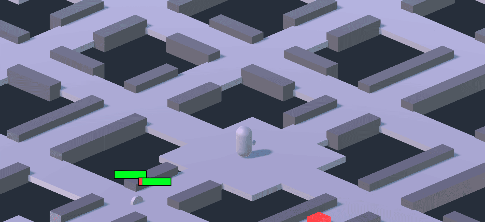

Project Vega was the first game that was made by the Game Development Association when it was started in 2017. It was planned to be made into a rogue-like RPG (Role Playing Game) where you play as a robot that is trying to explore the local area without being destroyed. As the player progresses through the game they would find snippets of files in the world that would help explain how the world got into the state it was in. However, if your character was to die, you would not get another life to continue what you were doing and instead you would be rebuilt at the robot factory where you came from and forced to start all over again while losing most of the resources and upgrades you gathered.
When developing the project, the team was quite excited about being able to work on their first large scale game so a lot of different concept art, game assets and game mechanics were created during the overall run. Here are a few of the highlights from what was created.
Characters
When developing Project Vega there were many concepts of characters we wanted added into the game but due to time constraints we were only able to get a few modeled and into the games files.
The first actual character we were able to implement into the game was the Tanker robot which was designed by Dylan Plomondon. The Tanker robot was going to be your standard low-level grunt enemy which could be modified to be harder as time went on. It was modeled and fully animated in the game and had the capability to fire tiny turrets.
The first main character we had created was the Jerome robot, which unlike the Tanker bot was humanoid. The concept of Jerome was made by Morgan Jones, the 3D model was created by Immanuel Marshall, and was animated by Dylan Plomondon. This was meant to be one of the three characters a person could choose when starting out a world and would have served as the most basic option you could choose before you unlocked the other two.
The other two characters that was going to server as the main characters was Brutis and Mantis which were also designed by Morgan Jones and partially modeled by Dylan Plomondon. Mantis had a more sleek and stealthy design to him but a weaker overall build. Brutis however was the reverse being more designed like a tank than the actual Tanker robots he was at base lvl stronger but slower.
There were many other characters and sketches designed for this game but we felt they deserved a separate section on the art page of the site.
Story
Now not every game has to have a story immediately presented at the start of the game and that is what we basically did. At the start of the game you would be rebuilt by the AI who ran the factory that created you. We never fully decided on a personality for the AI (but the majority of us thought of it as a Glados). After you learned the basic controls you would leave the factory to try to learn what happened to the world.
Through the world the character would find files that would explain what happened to the world. However there were certain files that were corrupted and unviewable until the character found a certain component to rebuild/analyses them. Here is an example of one of these logs our character would have found within the world. The majority of the story ideas was discussed by everyone but the person who actually created the majority of the actual story was Kevin Adair.
Environments
In terms of how much environment we got completed we were only really able to get a randomly generated map to be built with different colors representing the different biomes. However, there was many concepts for different environments derived by our artists. Here are a few different examples created by Morgan Jones
These environments were to give us a rough idea of what the world within our game might become once we got to that phase of design. However, even though these environments were great examples for what we could do if we had another few semesters to work on it, we had to design a less complex environment because of time constraints. The environment the game ended up having was a procedurally generated environment that used different pre-made models to fill in the environment.
Here is an example of what our world started to look like. This is one of the few segments in the world with different areas representing different stages. The overall procedural generation was made by Joshua Lutz, Miles Wood, and Victor Weeks who designed multiple tile sets for the procedural generation of the map as well as came up with a way to declare the amount of biomes the world would have.
Struggle
Anytime when a group of people comes together to create a game there is going to be issues and difficulties with completing the game. There were plenty of issues the team faced quiet constantly but the primary one that resulted was midterms and finals. This caused some of the best coders and artist who were currently on the team to up and disappear for weeks at a time which normally isn't that bad except there was a few weeks when only two to three people showed up out of the ten because of assignments.
The other major issue the team faced was we planned too big the first time around. We spread our resources too thin developing a large world that we barely got a working model of the game out.
Result
Even though we couldn’t make a fully working game within the first semester we all learned a lot about game design as well as planning small and then incrementing from there. The President of the Game Development Association during that semester Habeeb Mohammed also made a video to show off the progress and hard work that went into developing this game. It shows worked on what in the project as well as a few assets that were not present in this webpage.